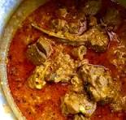

Mutton Curry NIGGA

Description
This recipe is the star dish every Diwali at my Indian relative's home in Malaysia. I had to beg my husband's aunt to give up her secret recipe so we could make it for our wedding. Serve over rice or with Indian breads such as naan or chapati.
Ingredients
- 2 pounds goat stew meat, cut into chunks
- 2 teaspoons salt, divided
- 1 teaspoon ground turmeric, divided
- ½ teaspoon ground black pepper
- 2 small red onions, quartered
- 1 ½ tablespoons coconut oil
Steps
- Season goat meat with 1 teaspoon salt, 1/2 teaspoon turmeric, and black pepper.
- Place red onions in a blender; grind into a smooth paste.
- Heat 1 1/2 tablespoons coconut oil in a Dutch oven over medium heat. Add cinnamon stick, star anise, and cardamom pods; cook until aromatic, about 30 seconds. Add fennel and cloves; cook and stir for 30 seconds. Add remaining 1 teaspoon salt and 1 tablespoon curry leaves; stir in the onion paste. Increase heat to medium-high. Cook and stir curry mixture for 5 minutes; add ginger-garlic paste and continue cooking until flavors meld, about 10 minutes.
- Stir diced tomato into the curry mixture. Cook and stir until mushy, about 4 minutes. Add the seasoned goat meat; cook until browned, 6 to 10 minutes. Transfer goat curry to a slow cooker; cook on High until meat is tender, 2 to 3 hours.